Overview
The goal of this project was to build a secure, self-hosted remote access solution that would let me reach my home network from anywhere without exposing services directly to the internet. I chose WireGuard for its simplicity, speed, and modern cryptographic design, running on a Raspberry Pi as a lightweight always-on gateway.
Architecture
The Raspberry Pi sits on the internal network and acts as the WireGuard endpoint. Remote clients connect through an encrypted tunnel, and traffic is routed through the Pi to reach internal services. The Pi also serves as the SSH jump host.
What I Built
1. WireGuard Tunnel Setup
Generated key pairs for the server and each client, configured the WireGuard interface on the Pi,
and set up peer configurations with restricted AllowedIPs so each client can only
reach what it needs. The tunnel uses UDP on a non-standard port to reduce noise from automated
scanners.
2. System Hardening
Locked down SSH with key-based authentication only, disabled root login and password auth.
Configured iptables rules to drop everything except WireGuard and SSH traffic, with
logging enabled for denied packets.
3. Firewall & Routing
Enabled IP forwarding and configured NAT masquerading so tunnel traffic can reach the LAN. Set up split-tunnel routing on the client side so only home network traffic goes through the VPN, keeping general browsing on the local connection for performance.
How It Was Built
Initial Setup
Using Raspberry Pi Imager, I installed Ubuntu Server 25.10 with SSH
enabled and an id_ed25519 handshake from System 1 with password authentication
disabled.
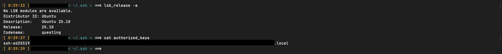
In order to properly engage SSH on the raspi through the USB-Ethernet adapter, I had
to change a
number of network settings on System 1. The adapter automatically created its own
IP, and using DHCP, the default interface (eth0) on the raspi assigned
its own IP on the subnet of the adapter.
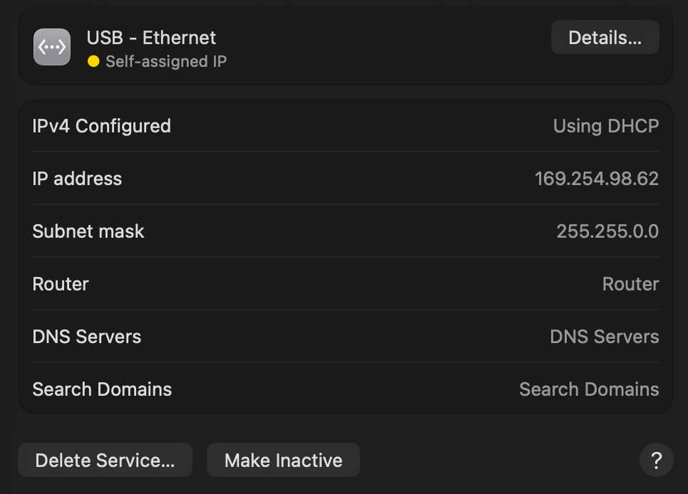
Due to the extremes of this IP, I decided to change the IP to the subnet of the local IP address,
which was: 192.168.2.1. The DHCP of the raspi automatically changed its local IP to:
192.168.2.6. As shown by the following output of arp-scan. Also I changed
the DNS to 8.8.8.8 to allow the raspi to route to outside connections.
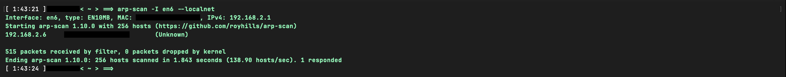
Installing and Implementing WireGuard
WireGuard was installed on System 1 using brew install wireguard and on the raspi using
sudo apt install wireguard. After WireGuard is installed on both systems, it is time to
create WireGuard configurations.
wg0.conf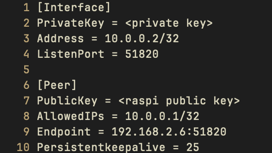
wg0.conf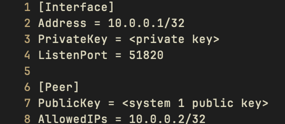
Both WireGuard configurations were named wg0.conf to ease any confusions regarding
interfaces configurations. Thus with the command sudo wg-quick up wg0, after moving
each config to its respective wireguard folder, the gateway is now open.
System 1 sudo wg show
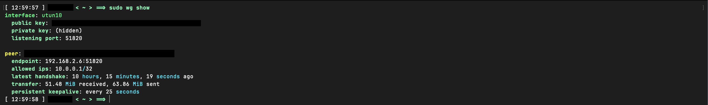
Raspberry Pi sudo wg show
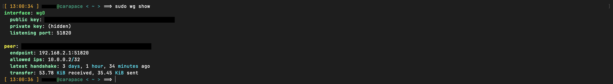
Confirmation to show that the handshake is working. WireGuard should show that there is a transfer sent to both sides.
System Hardening
With the tunnel working, the next step was locking down the raspi so it isn't exposed
to unnecessary risk. The first target was SSH. I edited /etc/ssh/sshd_config
to disable password authentication entirely and block root login, leaving key-based
auth as the only way in.
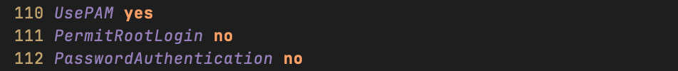
After restarting the SSH daemon with sudo systemctl restart sshd, I verified
that password login attempts were rejected and only the id_ed25519 key
from System 1 was accepted.
Next I set up iptables rules on the raspi to drop all inbound traffic
except WireGuard (UDP port 51820) and SSH. Everything else gets dropped by default,
and denied packets are logged so I can review them later.
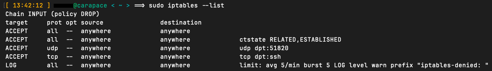
To make the rules persist across reboots, I saved them with
sudo iptables-save > /etc/iptables/rules.v4 and installed the
iptables-persistent package.
Firewall & Routing
With the tunnel up and the raspi locked down, the last piece was making sure traffic
could actually flow from WireGuard clients through to the home LAN. By default, Linux
does not forward packets between interfaces, so the first step was enabling IP
forwarding by adding net.ipv4.ip_forward=1 in
/etc/sysctl.conf and applying it with
sudo sysctl -p.
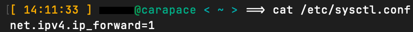
Next I added iptables rules to the FORWARD chain to allow traffic
originating from the WireGuard interface (wg0) to pass through to the
LAN, and to allow return traffic for established connections back into the tunnel.
Without these, packets would arrive at the raspi and get dropped even though the INPUT
chain was fine.
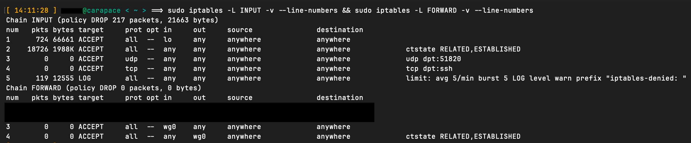
For the LAN to actually respond to tunnel clients, I set up NAT masquerading on
the outbound interface with
iptables -t nat -A POSTROUTING -o eth0 -j MASQUERADE. This rewrites
the source address of tunnel traffic to the raspi's LAN IP, so other devices on the
network see the requests as coming from the raspi itself and know where to send replies.
Without masquerading, responses would be addressed to the 10.0.0.0/24
subnet, which the LAN has no route to.
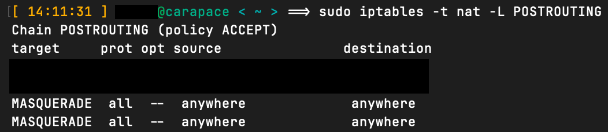
On the client side, I configured split-tunnel routing so that only traffic destined
for the home network (192.168.2.0/24) gets routed through the VPN. This
was done by setting AllowedIPs = 192.168.2.0/24, 10.0.0.0/24 in
System 1's wg0.conf rather than using 0.0.0.0/0, which
would route all traffic through the tunnel. The result is that browsing and general
internet traffic stays on the local connection for speed, while home network access
goes through WireGuard.
After confirming that System 1 could reach devices on the home LAN through the
tunnel, I saved the full ruleset again with
sudo iptables-save > /etc/iptables/rules.v4 to make sure the
forwarding and NAT rules persisted alongside the hardening rules from earlier.
Conclusion
This project gave me a working, self-hosted VPN that I can rely on to securely access my home network from anywhere.
Beyond just getting remote access working, the process taught me a lot about how Linux networking actually operates under the hood. Configuring IP forwarding, writing iptables rules across multiple chains, and debugging NAT masquerading forced me to understand packet flow.
If I revisit this project, I would like to add automatic key rotation, set up monitoring to track tunnel uptime and throughput, and explore adding a second raspi as a failover node. For now, though, the setup is solid and does exactly what I need.